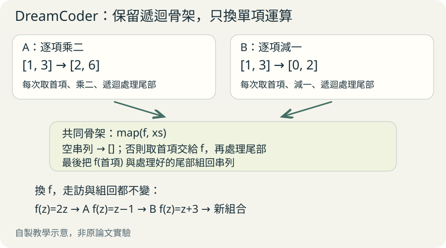
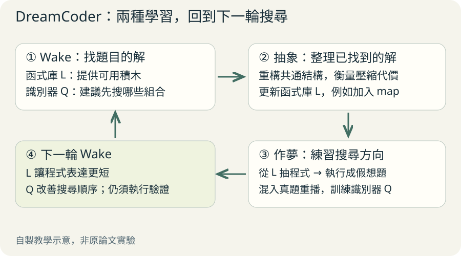
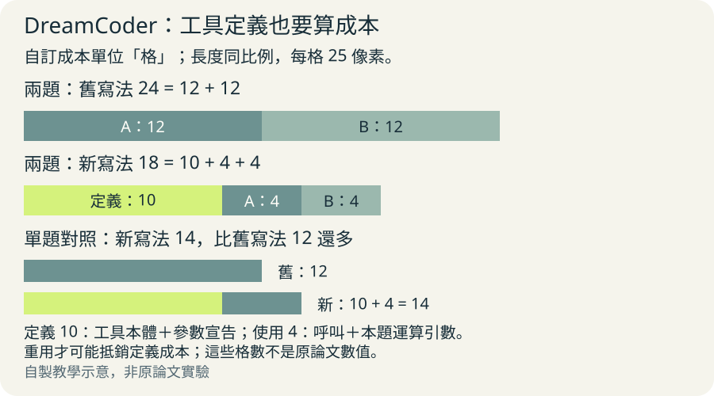

想像你每天用積木蓋房子。後來發現，每次都要重組一樣的窗戶，於是把窗戶做成可重用零件。DreamCoder 對程式做類似的事：解過題後，整理共用工具，下一次再用。這是生活比喻，不是論文實驗。
它想解決什麼問題？
你給電腦幾組範例，希望它找出處理規則。例如把 [1,3] 變成 [2,6]，把 [-2,4] 變成 [-4,8]。我們容易想到每個數乘二；電腦則要在許多可能的程式中搜尋。
如果每次都從最小零件重寫，程式越長，要試的組合越多。DreamCoder 會跨題學習：把常用做法變成函式庫裡的新工具，再訓練神經網路判斷新題先試哪些工具。
跟著兩個小任務，找出共同骨架
以下依原文圖 3 改寫，數字與偽碼為教學示意。任務 A 把 [1,3] 變成 [2,6]；任務 B 把 [1,3] 變成 [0,2]。A 每個數乘二，B 每個數減一。
手算 A：先讀到 1，乘二得到 2；再讀到 3，乘二得到 6；沒有數了就停止，依原順序組回 [2,6]。B 走的路完全一樣，只把乘二換成減一。
把相同的走訪做法留下，把單項運算留成可替換的位置，就得到 map。map 的意思是：把指定運算套到串列的每一項。下次逐項加三，就能沿用這個工具。
map(運算, 串列)：
若串列為空，回傳 []
計算 運算(第一項)
對剩下的項目再做 map
把結果按順序接回
map(乘二, [1,3]) → [2,6]
map(減一, [1,3]) → [0,2]走同一條路，替換單項運算

放大閱讀圖解 ↗ · 窄螢幕可在圖內左右滑動。

圖解文字說明
- 共同骨架
讀第一項 → 做運算 → 處理剩餘項 → 按順序接回
- 插入乘二
1 變 2、3 變 6，得到 [2,6]
- 插入減一
1 變 0、3 變 2，得到 [0,2]
清醒時解題，休息時整理與練習
清醒階段叫 wake：先用目前的工具找解。神經網路給搜尋方向，候選程式仍要實際執行，檢查是否符合題目。 神經網路只是排優先順序，可能猜錯；時間有限時仍可能找不到解。
休息階段叫 sleep，但有兩件不同的事。抽象階段整理舊解，找到值得保存的共用工具；作夢階段用目前工具造練習題，再訓練神經網路辨認解題方向。夢是程式生成的假想任務，不表示電腦有睡眠經驗。 抽象改的是函式庫；作夢訓練改的是神經網路的權重，也就是它用來預測的數值參數。
工具讓解變短，搜尋方向讓亂試變少。下一輪便有機會解出更多題，再提供新的整理材料。
把小例子接成一輪：清醒時先找到乘二與減一的兩段遞迴；抽象時整理成 map；作夢時用 map 與加三生成 [1,3] → [4,6] 這類練習，重新找解並訓練網路。下一輪遇到逐項加三，便可優先試 map。這是展示流程的教學假想，並非論文記錄的單次執行軌跡。
一輪學習，改變兩種東西

放大閱讀圖解 ↗ · 窄螢幕可在圖內左右滑動。

圖解文字說明
- Wake：找解
用目前工具解題，留下符合範例的候選程式
- Sleep：抽象
重寫並比較舊解，保存值得重用的工具
- Sleep：作夢
生成練習題並重播舊題，訓練網路指引下輪搜尋
少搭幾塊，還是少翻幾個箱子？
- 函式庫：少搭幾塊
把整扇窗變成一個積木零件。蓋房時需要的組裝步數變少，對應縮短程式與搜尋深度。
- 識別模型：少翻箱子
看到房子的樣子，先去窗戶箱找合適零件。每一步優先試的選項變少，對應縮小搜尋廣度。
- 一起使用
窗戶零件讓組裝省步驟，找零件的提示讓你少亂試；增加零件後，也更需要選擇方向。
為什麼不能把每個答案都存起來？
工具箱也會占空間。若每解一題就保存整支程式，箱子可能塞滿只用一次的零件。DreamCoder 會權衡新工具定義的成本，以及它能替多個解省下多少描述長度。
另一個難點是，同一件事能有不同寫法。系統會在有限範圍內重寫舊程式，讓原本藏起來的共同結構浮現，再決定是否抽成工具。
多用幾次，工具才可能划算

放大閱讀圖解 ↗ · 窄螢幕可在圖內左右滑動。

圖解文字說明
- 原先兩個解
12＋12＝24 格，每題都重寫完整做法
- 共用工具後
定義 10＋呼叫 4＋呼叫 4＝18 格，兩題合計省 6 格
- 只有一題呢？
定義 10＋呼叫 4＝14 格，比原來 12 格多 2 格
先記住這些邊界
系統不是白紙起步。人仍要提供初始操作、資料表示與檢查方式。少量例子也可能同時符合多種規則；通過範例不保證懂了使用者的全部意圖。
這篇論文展示的是在指定領域學工具與搜尋策略。它沒有證明一個模型已能自由跨域解所有問題，更沒有證明一般智能。作者也指出，更雜亂、有雜訊的真實資料仍是挑戰。
技術細節：怎麼挑解、怎麼作夢？
貝氏推論先替程式設定原先可信程度，再用任務資料更新。DreamCoder 偏好既能解釋資料、又在目前函式庫中描述簡潔的解。識別模型 Q 是從題目推測值得搜尋的程式的神經網路。方法見原文頁 5 的公式 1。
抽象階段不是只找重複文字，而會搜尋行為相同的重構寫法。候選很多，因此作者限制重構範圍，並共享儲存重複結構；這是近似搜尋，沒有保證得到全域最佳工具箱。見頁 7、圖 3。
作夢訓練混合已解任務的重播與由函式庫生成的幻想，各占一半。幻想題還會重新搜尋高後驗解，再用找到的解訓練網路，不一定把最初生成的程式當唯一答案。見頁 7–8。
多看一步：改寫與存工具的成本
教學示意：把「第一項乘二，再遞迴處理尾部」改寫成「把函式 f 設為乘二，再交給共同走訪骨架」。將 f 代回去，就還原同樣的計算；這說明重構要保持行為，而不是任意換答案。實際系統使用更嚴格的程式表示與有限重構搜尋。
再假設用人為的玩具記分：兩個舊解各花 12 格，合計 24 格；新工具定義花 10 格（含工具本體與參數宣告），各題改用工具後各花 4 格（含呼叫與本題運算引數），合計 18 格，就值得保留。若只有一題，14 格反而比原先 12 格多。這些格數只教你看「定義成本＋使用成本」，不是原文數值，也不是實作的精確機率計算。
下方兩式把乘二函式代回 f，就能來回改寫。λ 表示接受參數的函式，rest 代表已處理的尾部。這只展示 β 約簡與展開，也就是將函式引數代回本體；不是完整的 map 發現演算法，也未展示遞迴部分的所有重構。
(λf. cons(f(head(xs)), rest))(λz. 2*z)
↔ cons(2*head(xs), rest)實驗數字究竟支持什麼？
文字編輯實驗用 128 個自動生成任務訓練，在 2017 SyGuS 的 108 題測試。每題十分鐘預算下，學習前解出 3.7%，學習後解出 79.6%。這是該測試集的結果，不能當成所有文字工作的成功率。來源：原文頁 9。
消融實驗分別拿掉識別模型或函式庫成長，觀察結果變化。完整系統在所測領域解出最多留出任務，支持兩部分都有貢獻。訓練通常約一天、使用 20–100 顆 CPU，因此少樣本不等於少計算。來源：原文頁 13、圖 6。
物理實驗從遵循 60 條定律與數學恆等式的數值資料學習，八輪後解出其中 93%。初始工具仍有人提供的串列操作與算術。這是受控資料中的結構重建，不能解讀成從真實世界自主發現新物理。來源：原文頁 14、圖 7。
回原文先看哪裡？
先看圖 2 的三階段，分清楚哪一步解題、哪一步改工具、哪一步訓練網路。再看圖 3，親手把逐項乘二與逐項減一改成 map。
接著讀 Wake/Sleep Program Learning 的公式 1，再看 Results 的文字編輯實驗與圖 6 消融。最後讀頁 16 Discussion 的限制。想研究重構演算法，再追文中指向的補充材料 S4.5。
原文與來源
此頁依下列固定快照編寫；教學例子與程式片段用來解釋方法，請回到原文確認研究設定與結果。